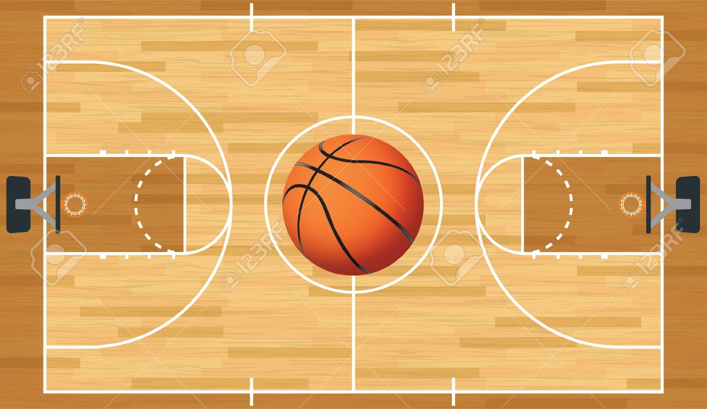
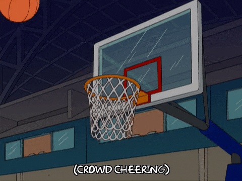
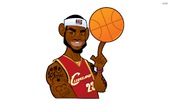

-
Basketball
I would consider basketball to be way more than just an interest of mine. Basketball has taken up a significant portion of my life. It has taught me valuable lessons about life and about relationships with people. It has also guided me to go to a school that has taught me more in 3 years than I could have ever imagined. In this website I have provided a lot of my knowledge of the sport: essentially everything that I have learned about it from my years of playing.
In the "How to play" section, I have provided details on how the game is played at every level. There are many differences in the way that the game is played at the high school, college, and nba level.
In the "My Career" section, I have shown every aspect of my career playing this sport. This includes every team that I was on, and some of the achievements that our team accomplished the year that we played together.
Finally, in the "Teams" section, I talk a little bit about some of my favorite NBA players and teams.
-
-
-

This is a basketball, the most commonly used type made by Spalding.

This is what a typical court looks like that the game is played on.

-
I have played basketball since I was in 3rd grade. I have played on at least 10 different teams with many different coaches. I have learned so many different things from each coach.
3 of the main life lessons that I have learned that have stuck with me even today are as follows.
-
Accountability
-
Being on time
-
Work ethic
These valuable lessons can only be truly understood if they are lived through and experienced. Simply telling someone these things is not enough to make them truly believe it. Thankfully, these things being drilled into my head year after year on the court has helped me to embody their meaning.
-
-
Here are some links to websites and videos that help provide deeper insight into the importance of this game:
-
-
Never played? Here are some benefits of starting!

-
Check out the official NBA rulebook!
-
Keep track of the upcoming NBA draft prospects!
